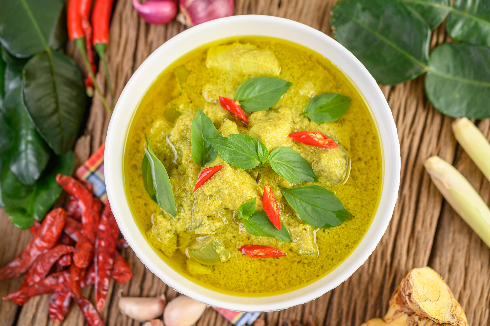

Chicken Green Curry

Coconut Bliss in Every Bite
Thai Chicken Green Curry is a classic Thai dish known for its rich and aromatic flavor.
This curry combines tender chicken pieces, vegetables, and a blend of spices in a creamy coconut milk base, offering a perfect balance of sweet, spicy, and savory tastes.
Ingredients
- 1 lb chicken breast, sliced
- 2 cups coconut milk
- 2 tbsp green curry paste
- 1 cup bamboo shoots
- 1 red bell pepper, sliced
- 1 cup Thai basil leaves
- 2 tbsp fish sauce
- 1 tbsp palm sugar
- 2 kaffir lime leaves
- 1 tbsp vegetable oil
Directions
- Heat oil in a pan and fry the green curry paste until aromatic.
- Add chicken and cook until it turns white.
- Pour in coconut milk and bring to a boil.
- Add bamboo shoots, bell pepper, and kaffir lime leaves. Simmer for 10 minutes.
- Season with fish sauce and palm sugar.
- Add Thai basil leaves just before serving.
- Serve hot with jasmine rice.
Return to recipes page